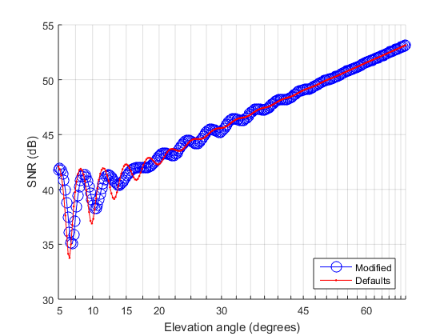
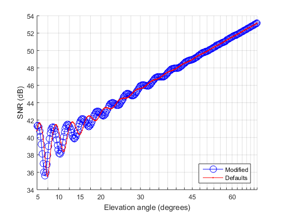
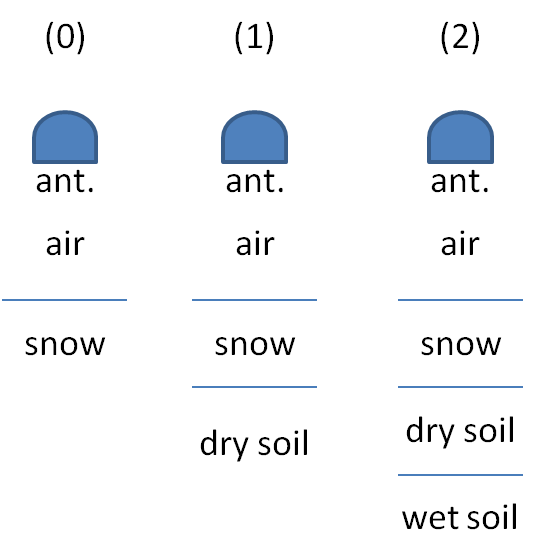
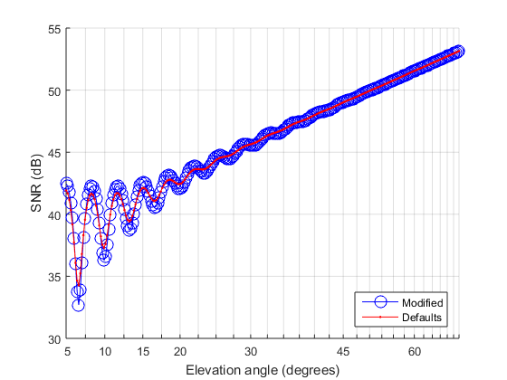
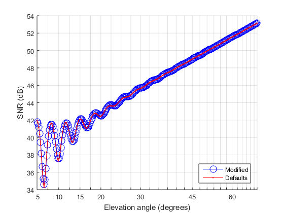
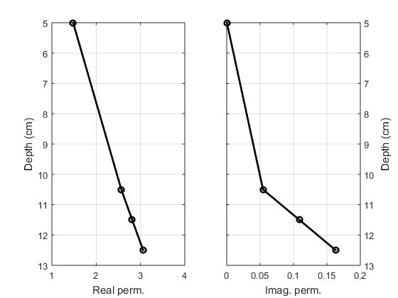
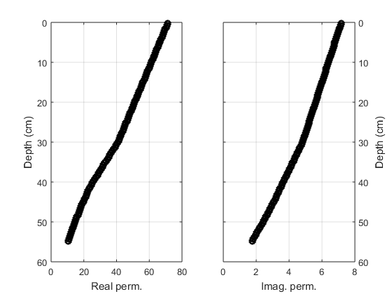
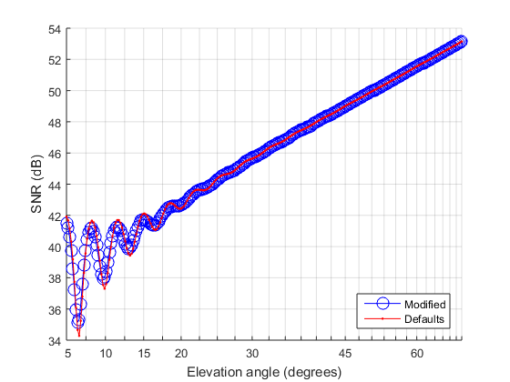
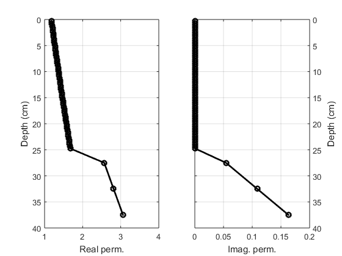
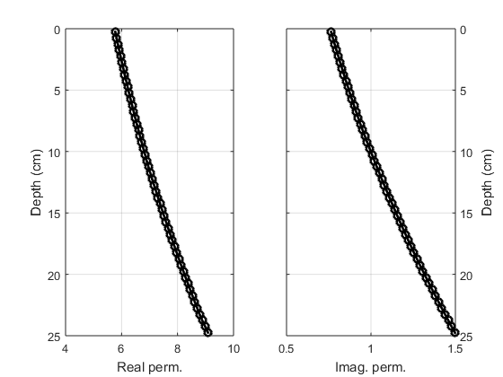

Material stratification or layering
Geophysical media often exhibit stratification or layering; here we show how to produce a forward simulation account for.
This demo itself is writen in MATLAB; you can see its souce code clicking here.
Contents
A slab between halfspaces
A slab can be inserted between top and bottom half-spaces. So in addition to material_top and material_bottom, we introduce sett.sfc.material_middle, which has a thickness value:
sett = snr_settings(); % Define first case -- dry soil of infinite thickness: sett.sfc.fnc_snr_setup_sfc_material = @snr_setup_sfc_material_halfspaces; sett.sfc.material_top = 'air'; sett.sfc.material_middle = []; sett.sfc.material_bottom = 'dry soil'; setup = snr_setup (sett); result0 = snr_fwd (setup); % Define second case -- 1-cm thick dry soil slab on top of metal: sett.sfc.fnc_snr_setup_sfc_material = @snr_setup_sfc_material_slab; sett.sfc.material_top = 'air'; sett.sfc.material_middle = struct(); sett.sfc.material_middle.thickness = 1e-2; % in meters sett.sfc.material_middle.name = 'dry soil'; sett.sfc.material_bottom = 'metal'; setup = snr_setup (sett); result = snr_fwd (setup); % Compare: snr_demo_plot2 (result, result0) %snr_demo_plot_diff (result, result0)
Layering can affect the interpretation of the antenna height. When dealing with soil, the middle slab is underground, whereas with snow, the slab is above-ground. So for soil, the reference surface is the top halfspace interface, whereas for snow it is the bottom halfspace interface. We can use sett.sfc.vert_datum to define the vertical datum:
sett = snr_settings(); sett.ref.ignore_vec_apc_arp = true; % Define first case -- 10-cm snow slab, on top of dry soil halfspace: sett.sfc.vert_datum = 'bottom'; sett.sfc.fnc_snr_setup_sfc_material = @snr_setup_sfc_material_slab; sett.sfc.material_top = 'air'; sett.sfc.material_middle = struct(); sett.sfc.material_middle.thickness = 0.10; % in meters sett.sfc.material_middle.name = 'dry snow fixed'; sett.sfc.material_bottom = 'dry soil fixed'; setup0 = snr_setup (sett); result0 = snr_fwd (setup0); % Define second case -- 10-cm wet soil slab, on top of dry soil halfspace: sett.sfc.vert_datum = 'top'; sett.sfc.material_middle = struct(); sett.sfc.material_middle.thickness = 0.10; % in meters sett.sfc.material_middle.name = 'wet soil fixed'; sett.sfc.material_bottom = 'dry soil fixed'; setup = snr_setup (sett); result = snr_fwd (setup); % This scenario corresponds to case (1) in the cartoon below; compare: snr_demo_plot2 (result, result0)
Although both setup have the same antenna height, the resulting effective height of the antenna above the references surface is different:
disp({setup0.sfc.vert_datum, setup0.sfc.height_ant_sfc - setup0.ref.height_ant})
disp({setup.sfc.vert_datum, setup.sfc.height_ant_sfc - setup.ref.height_ant})
'bottom' [-0.1000]
'top' [0]
If the bottom half-space is empty, then it will default to the middle slab. Thus the permittivity contrast is lost at the bottom interface, which reverts the scenario back to the case of two half-spaces, with no slab in between -- see case (0) in the cartoon below; this is akin to having a very thick middle slab.
sett = snr_settings(); sett.sfc.vert_datum = 'top'; % Define first case -- infinite dry snow medium: sett.sfc.fnc_snr_setup_sfc_material = @snr_setup_sfc_material_halfspaces; sett.sfc.material_top = 'air'; sett.sfc.material_middle = []; sett.sfc.material_bottom = 'dry snow fixed'; setup = snr_setup (sett); result0 = snr_fwd (setup); % Define second case -- 10-cm thick snow slab, on top of infinite snow: sett.sfc.fnc_snr_setup_sfc_material = @snr_setup_sfc_material_slab; sett.sfc.material_top = 'air'; sett.sfc.material_middle = struct(); sett.sfc.material_middle.thickness = 0.1; % in meters sett.sfc.material_middle.name = 'dry snow fixed'; sett.sfc.material_bottom = []; % <<< NOTICE setup = snr_setup (sett); result = snr_fwd (setup); % Compare: snr_demo_plot2 (result, result0) %snr_demo_plot_diff (result, result0)


Few-layer profile
Above we had a single slab; two layers of different materials -- snow and soil -- can be defined as follows (notice that thickness now is a vector rather than a scalar):
sett.sfc.fnc_snr_setup_sfc_material = @snr_setup_sfc_material_layered; sett.sfc.material_top = 'air'; sett.sfc.material_middle = struct(); sett.sfc.material_middle.thickness = [0.10; 0.10]; % in meters sett.sfc.material_middle.name = {'dry snow fixed'; 'dry soil fixed'}; % This two-layer middle media still sits on top of a bottom halfspace, soil: sett.sfc.material_bottom = 'wet soil fixed'; setup = snr_setup (sett); result = snr_fwd (setup); % This scenario corresponds to case (2) in the cartoon above; compare: snr_demo_plot2 (result, result0)
We can also have a few layers of the same material type (e.g., soil) but with different material properties, such as moisture (which is now vector- valued, just like thickness):
sett.sfc.fnc_snr_setup_sfc_material = @snr_setup_sfc_material_layered; sett.sfc.material_top = 'air'; sett.sfc.material_middle = struct(); sett.sfc.material_middle.thickness = [1; 1; 1]*1e-2; % in meters sett.sfc.material_middle.moisture = [0.75; 0.5; 0.25]; sett.sfc.material_middle.name = 'soil'; sett.sfc.material_middle.type = 'sandy loam'; sett.sfc.material_bottom = 'dry soil fixed'; setup = snr_setup (sett); result = snr_fwd (setup); % Compare: snr_demo_plot2 (result, result0)
Stacks
Diferent material types (e.g., soil and snow) each with varying material properties (e.g., moisture and density) can be achieved forming a stack of two media (e.g. snow on soil).
sett.sfc.fnc_snr_setup_sfc_material = @snr_setup_sfc_material_stacked; sett.sfc.material_top = 'air'; sett.sfc.material_middle = repmat(struct(), [2,1]); % Define the first middle medium -- a 10-cm thick homogeneous slab of snow: sett.sfc.material_middle(1).fnc_snr_setup_sfc_material = @snr_setup_sfc_material_slab; sett.sfc.material_middle(1).thickness = 0.1; % in meters sett.sfc.material_middle(1).name = 'dry snow fixed'; % Now define the second middle medium -- three 1-m thick layers of soil, % exhibiting increasing moisture downward: sett.sfc.material_middle(2).fnc_snr_setup_sfc_material = @snr_setup_sfc_material_layered; sett.sfc.material_middle(2).thickness = [1; 1; 1]*1e-2; % in meters sett.sfc.material_middle(2).name = 'soil'; sett.sfc.material_middle(2).type = 'sandy loam'; sett.sfc.material_middle(2).moisture = [0.01; 0.02; 0.03]; % Finally, the bottom halfspace is taken equal to the bottom-most stack % media, namely, the soil with the most moisture: sett.sfc.material_bottom = []; setup = snr_setup (sett); result = snr_fwd (setup); % Compare: snr_demo_plot2 (result, result0) % Plot interpolated profile: snr_demo_plot_prof (setup) 
Interpolated profile
Often times we are given a vertical profile made of a few measured properties and we want to interpolate its values at unsampled depths, for example, soil moisture measured at 25-cm depth intervals, with which we will interpolate a 5-mm thick layers up to a maximum depth of 55 cm:
sett.sfc.fnc_snr_setup_sfc_material = @snr_setup_sfc_material_interpolated; sett.sfc.material_top = 'air'; sett.sfc.material_middle = struct(); sett.sfc.material_middle.name = 'soil'; sett.sfc.material_middle.type = 'sandy loam'; sett.sfc.material_middle.property_name = 'moisture'; sett.sfc.material_middle.property_sample = [0.75; 0.5; 0.25]; sett.sfc.material_middle.property_depth = [0; 0.3; 0.5]; sett.sfc.material_middle.depth_max = 0.55; % in meters sett.sfc.material_middle.depth_step = 5e-3; % in meters sett.sfc.material_bottom = []; setup = snr_setup (sett); result = snr_fwd (setup); % Compare: snr_demo_plot2 (result, result0) % Plot interpolated profile: snr_demo_plot_prof (setup)
Warning: Extrapolating property "moisture" of material "soil".
An interpolated layer can be stacked just like any other kind:
sett.sfc.fnc_snr_setup_sfc_material = @snr_setup_sfc_material_stacked; sett.sfc.material_top = 'air'; sett.sfc.material_middle = repmat(struct(), [2,1]); % Define the first middle medium -- snow measured at 10-cm depth intervals, % then interpolated at 5-mm thick layers up to 25-cm maximum depth: sett.sfc.material_middle(1).fnc_snr_setup_sfc_material = @snr_setup_sfc_material_interpolated; sett.sfc.material_middle(1).name = 'dry snow'; sett.sfc.material_middle(1).property_name = 'density'; sett.sfc.material_middle(1).property_sample = [0.1; 0.2; 0.3]; sett.sfc.material_middle(1).property_depth = [0; 0.1; 0.2]; sett.sfc.material_middle(1).temperature = -5; sett.sfc.material_middle(1).depth_max = 0.25; % in meters sett.sfc.material_middle(1).depth_step = 5e-3; % in meters % Now define the second middle medium -- 5-cm thick homogenous layers with % known soil moisture: sett.sfc.material_middle(2).fnc_snr_setup_sfc_material = @snr_setup_sfc_material_layered; sett.sfc.material_middle(2).thickness = [1; 1; 1]*5e-2; % in meters sett.sfc.material_middle(2).name = 'soil'; sett.sfc.material_middle(2).type = 'sandy loam'; sett.sfc.material_middle(2).moisture = [0.01; 0.02; 0.03]; sett.sfc.material_bottom = []; setup = snr_setup (sett); result = snr_fwd (setup); % Compare: snr_demo_plot2 (result, result0) % Plot interpolated profile: snr_demo_plot_prof (setup)
Warning: Extrapolating property "density" of material "dry snow". 
Parametric profile
It is also possible to specify the vertical profile of material properties in terms of a parametric formula:
sett.sfc.fnc_snr_setup_sfc_material = @snr_setup_sfc_material_parametric; sett.sfc.material_top = 'air'; sett.sfc.material_middle = struct(); sett.sfc.material_middle.name = 'soil'; sett.sfc.material_middle.type = 'sandy loam'; % A new field is used to specify the name of property parameterized: sett.sfc.material_middle.property_name = 'moisture'; % Another field is a function handle, dependent on both depth and arbitrary % parameters -- in this case, polynomial coefficients: sett.sfc.material_middle.fnc_property = @(depth, param) ... param(1) + param(2) .* depth + param(3) .* depth.^2; % The parameter values are specified it their own field: sett.sfc.material_middle.property_param = [0.1, 0.2, +0.3]; sett.sfc.material_middle.depth_max = 0.25; % in meters sett.sfc.material_middle.depth_step = 5e-3; % in meters sett.sfc.material_bottom = []; setup = snr_setup (sett); result = snr_fwd (setup); % Compare: snr_demo_plot2 (result, result0) % Plot interpolated profile: snr_demo_plot_prof (setup)
In summary, the definition of material stratification can involve any or all of the following:
- snr_setup_sfc_material_halfspaces
- snr_setup_sfc_material_slab
- snr_setup_sfc_material_layered
- snr_setup_sfc_material_stacked
- snr_setup_sfc_material_interpolated
- snr_setup_sfc_material_parametric